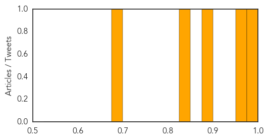
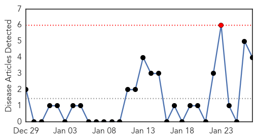
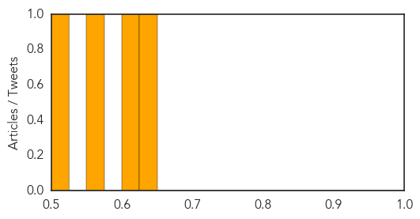

Pertussis
30-Day Web Trend
0 alerts, 0 warnings
30-Day Twitter Trend
0 alerts, 0 warnings

Article Locations
Article Confidences
Top Articles:
- 0.999
- Help Stop the Spread of Diseases in Washington—Get Vaccinated
- 0.966
- 6 More Measles Cases Confirmed In California After Disneyland Outbreak
- 0.876
- Whooping cough outbreak prompts immunization reminder
- 0.845
- NorthShore University HealthSystem develops a Doppler for disease
- 0.692
- 1 person dies from whooping cough in central Kansas
Top Tweets:
-
No tweets found for Jan 27, 2015
Hepatitis
30-Day Web Trend
1 alerts, 0 warnings

30-Day Twitter Trend
0 alerts, 0 warnings

Article Locations

Article Confidences
Top Articles:
Top Tweets:
-
No tweets found for Jan 27, 2015